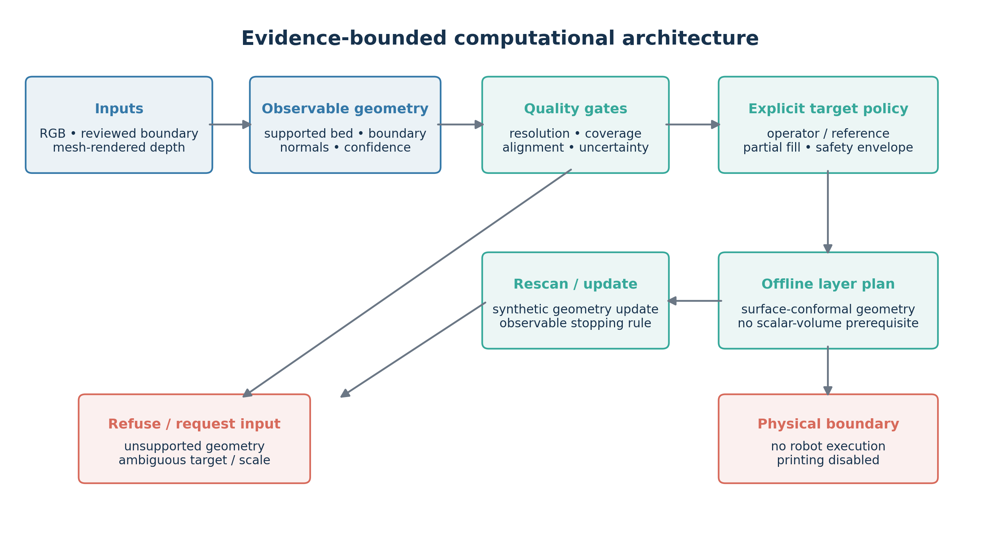
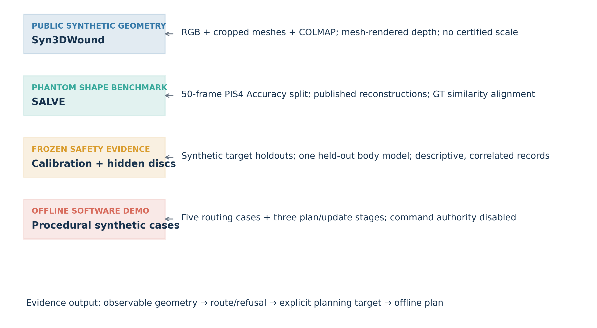
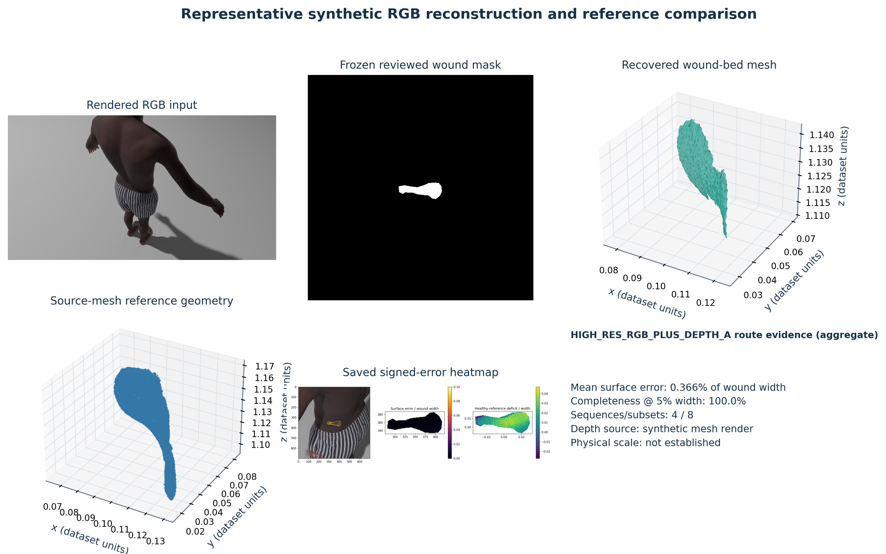
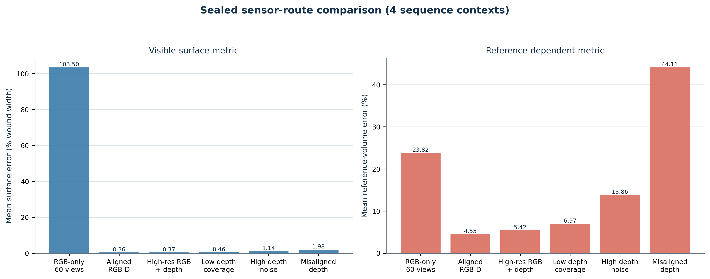
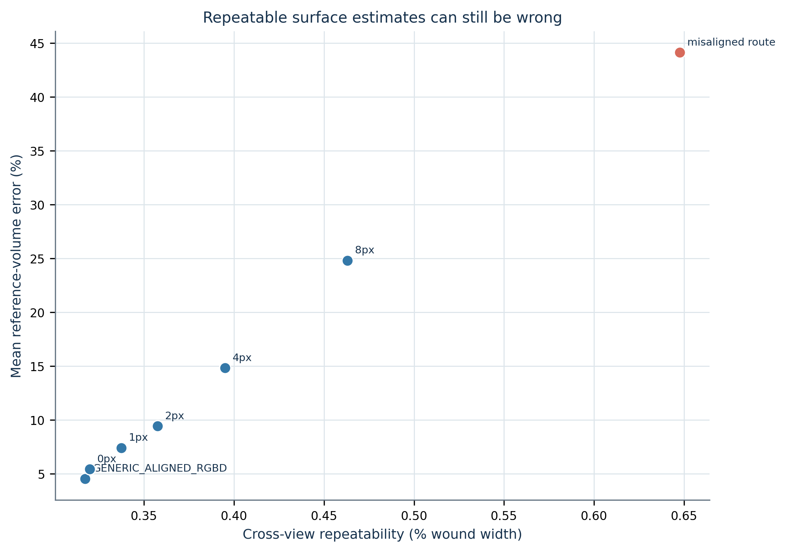
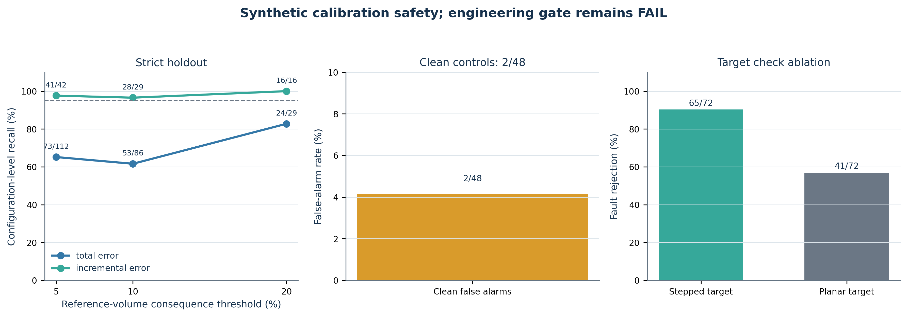
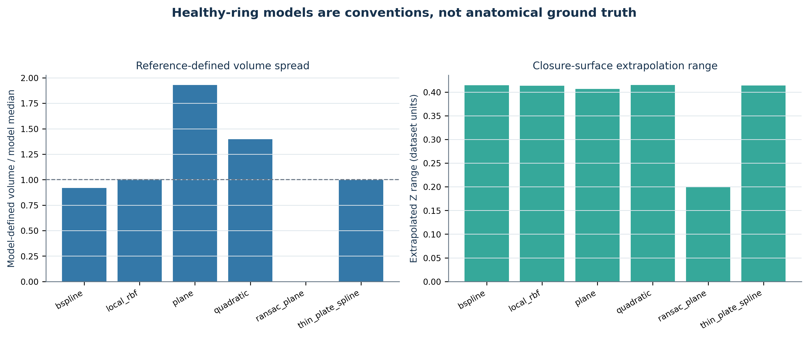
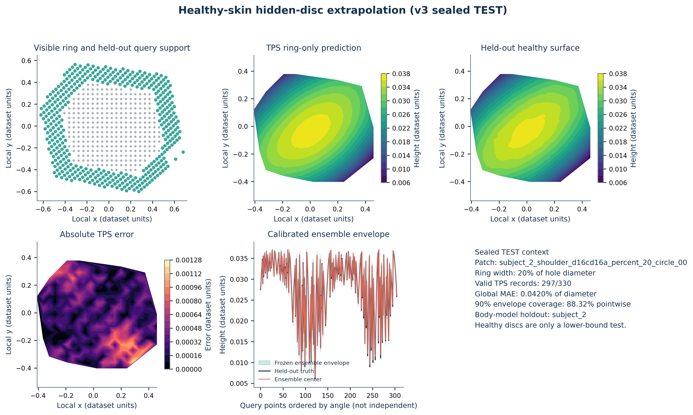
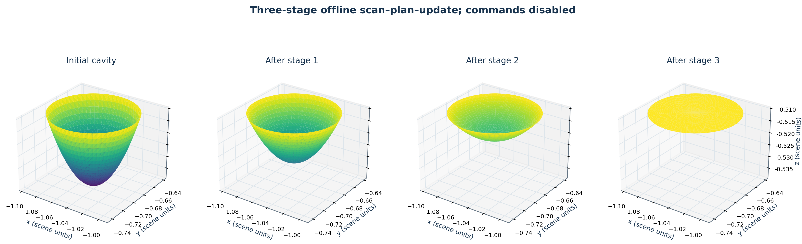

Publication package: PUBLICATION_READY_WITH_WRITING_GAPS. All scientific outputs shown are computational; no physical printing or CoppeliaSim execution was performed.
Metrics are descriptive; correlated views, subsets, patches and pixels are not independent samples. Synthetic depth is mesh-rendered. SALVE comparisons use GT similarity alignment and therefore do not prove independent metric scale. Pre-wound healthy skin is not identifiable from current observations.

Evidence-bounded computational architecture. Public RGB and mesh-rendered depth feed observable geometry and quality gates; failed or unsupported cases are refused. Reference-dependent fill requires an explicit target policy. The final output is an offline surface-conformal plan; neither robot execution nor printing is authorized.

Evidence stack and dataset roles. Syn3DWound supplies synthetic RGB/mesh controls; SALVE is used for shape comparison after ground-truth similarity alignment; procedural fixtures support offline routing and staged-plan demonstrations. None establishes independent metric scale or clinical validity.

Representative Syn3DWound reconstruction evidence: public rendered RGB, frozen reviewed mask, recovered wound-bed mesh, source-mesh reference geometry, and the saved error heatmap. Coordinates are dataset units. The source mesh is a synthetic reference, not an anatomical pre-wound surface.

Focused route comparison over four Syn3DWound sequence contexts. Surface errors are percent of wound width; reference-volume errors are relative to the declared synthetic source reference. The 60-view RGB-only route remains unsupported, and mesh-rendered depth results are not physical sensor validation.

Misalignment sensitivity. Small cross-view surface repeatability does not imply reliable reference-defined volume: route-level volume error rises under alignment offsets and reaches 80.5% in the tested misalignment route. Results are descriptive repeated synthetic subsets, not independent samples.

Synthetic calibration-safety evidence. Strict-holdout recall is shown for total and matched-clean incremental volume consequences; clean false alarms are 2/48. In the separate target ablation, stepped-target fault rejection exceeds planar-target rejection, with zero false alarms in 24 clean controls for each. The engineering gate remains failed.

Counterfactual healthy-skin closure ambiguity. Six ring-only reference models yield different reference-defined volumes and extrapolation ranges on one sequence. These are model-dependent planning quantities, not true wound or anatomical restoration volume.

Held-out healthy-disc exemplar from the sealed v3 test split. The visible ring supports ring-only TPS prediction; held-out truth is used only for evaluation. The calibrated ensemble envelope is shown with its test coverage context (88.3% pointwise versus a 90% target). This is a lower-bound healthy-surface test, not recovery of pre-wound anatomy.

Three-stage offline plan/update simulation on a synthetic cavity. Panels show the initial cavity and interpolated stage surfaces leading to the explicitly defined target; the observable stop rule is reached after three stages. Command records have deposition disabled; no CoppeliaSim, robot, physical deposition, or printing is represented.